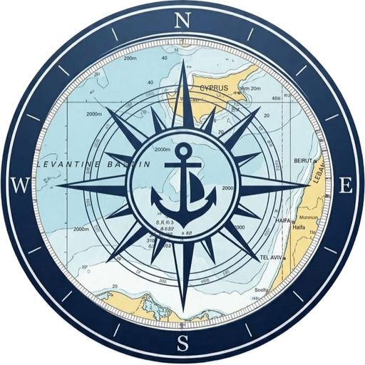

Avg Speed
0.0 kts
Loading your logbook…

Units for this log entry — flip anytime, doesn't change your default
Optional — leave blank and these are worked out from distance ÷ duration.
Units for this log entry — flip anytime, doesn't change your default
Save everything to a file you can keep in the cloud (Drive, iCloud, email) or move to a new phone.
Choose Day, Night, or Auto to switch based on your local sunrise and sunset
Default used throughout the app — you can still flip units for a single log entry while logging
Permanently erases every trip, boat, crew member, and profile detail on this device. This can't be undone — back up first if you want to keep anything.
Choose which boat you're taking out — this gets saved with the log entry.
We'll try to use your device's GPS to track your route, speed and distance live. If GPS isn't available, you can enter distance manually when you finish.
Tap a photo to use it as the cover for this log entry, or skip and it'll show in your history without one.
This is exactly how it'll look, ready to share.
Drag to reposition, use the slider to zoom.
This permanently deletes all trips, boats, crew and your profile from this device. This can't be undone.